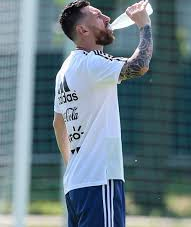

Cuando jugamos, corremos, saltamos, pateamos y hacemos mucho esfuerzo. Para poder hacer todo esto, nuestro cuerpo necesita energía. Aunque parezca que en el fútbol solamente hay que correr y jugar, la ciencia también está presente: en nuestro cuerpo ocurren diferentes procesos que nos ayudan a poder seguir jugando.
Cuando corremos o hacemos ejercicio, nuestros músculos necesitan energía para funcionar. Esta energía se obtiene principalmente de los alimentos que comemos. Uno de ellos es la glucosa, que nuestro cuerpo utiliza para obtener energía.
También respiramos más rápido y nuestro corazón late más rápido cuando hacemos ejercicio. Esto pasa porque nuestros músculos necesitan más oxígeno para poder trabajar.

Además, cuando jugamos durante bastante tiempo, transpiramos y perdemos agua. Por eso es importante tomar agua para mantenernos hidratados.
La ciencia también está presente en los elementos que usamos para jugar. Por ejemplo, la pelota está hecha con materiales que hacen que pueda rebotar, ser resistente y mantener su forma.
Como podemos ver, la ciencia está presente en el fútbol y en nuestro cuerpo. Gracias a ella podemos entender mejor qué pasa cuando jugamos y hacemos ejercicio.